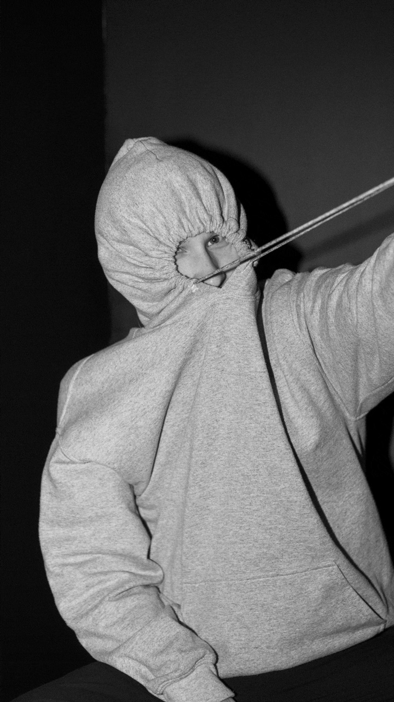
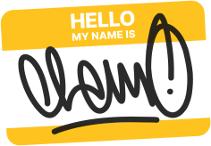
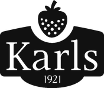
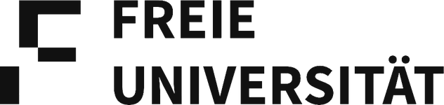

Shaping brands from insights to impact
Ausgewählte Arbeiten
Und so entstehen unsere Projekte:
Viele Marken gehen unter, weil sie nicht wissen, was sie besonders macht. Das finden wir zusammen heraus, in drei Schritten.
-
01
Strategie & Identität
Ziel festlegen, nach links und rechts schauen und den besten Weg für deine Marke finden.
- Workshops
- Markenanalyse
- Marktrecherche
-
02
Idee & Branding
Wir formen, wie deine Marke spricht und aussieht, damit dein Publikum endlich wieder etwas fühlt.
- Kreativkonzepte
- Art Direction
- Brand Design
-
03
Creative Assets
Die Marke wird lebendig, an jedem Berührungspunkt. Print, Digital, Außenwerbung: Was gebraucht wird, wird gebaut.
- Packaging
- UX / UI
- Editorial
- Kampagnen
Wer hat das alles gemacht?
Gut, dass du fragst.
Ich, Clemens. Kommunikationsdesigner, Dozent und Gründer von Studio Schah Sedi.


Ich glaube an Kommunikation, die hängen bleibt. Die einen kurz innehalten lässt, zum Nachdenken bringt oder zum Lächeln.
Das Studio ist mein Spielplatz und deine Startrampe. Zusammen bauen wir Marken, die sich richtig anfühlen, gut aussehen und einen Eindruck hinterlassen, über den man redet.
abgeschlossene Designprojekte in 12 Branchen und 3 Ländern
Was ich mitbringe
Alles, was deine Marke von langweilig zu unvergesslich bringt. Und wenn du etwas ganz Spezielles brauchst, kenne ich jemanden, der jemanden kennt.
Lass uns redenEin paar der Unternehmen, mit denen ich zusammenarbeiten durfte:

